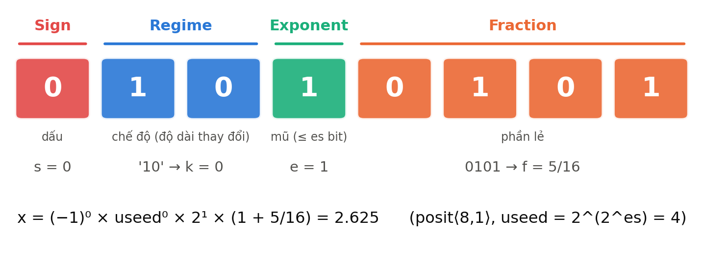
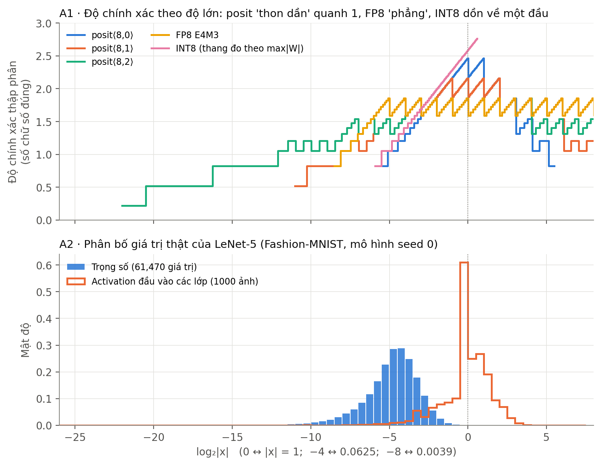
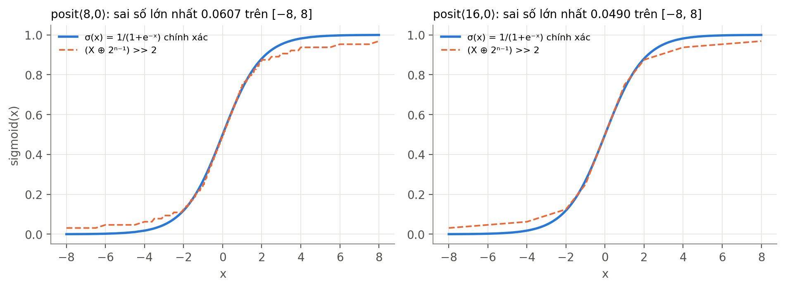
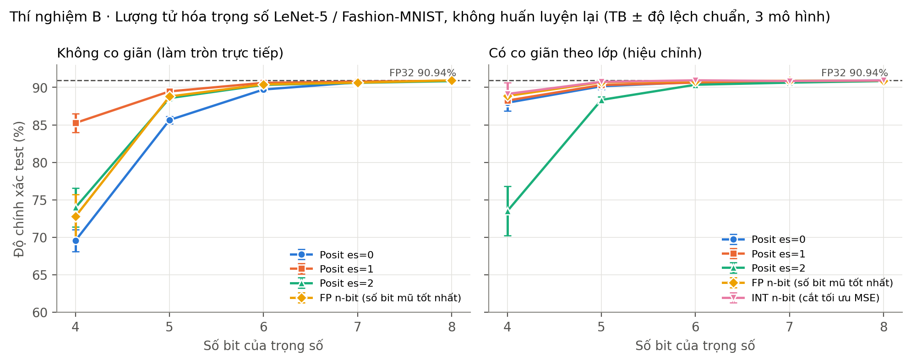
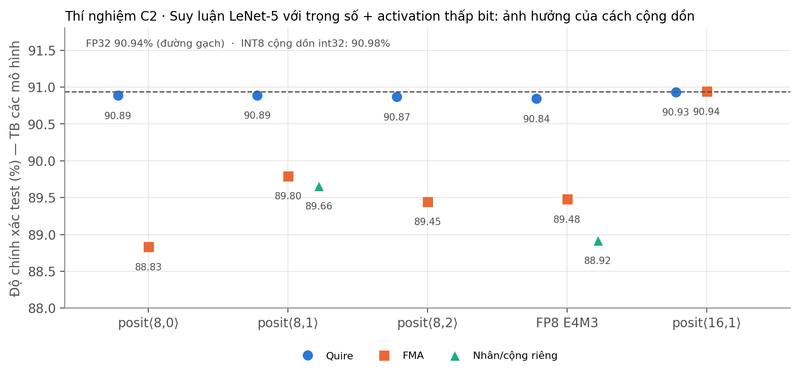
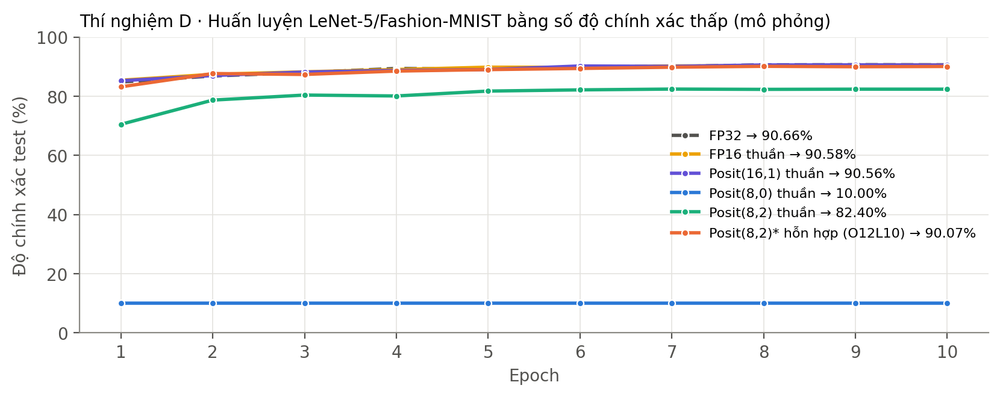

Nghiên cứu phương pháp, đánh giá đánh đổi
và kiểm chứng bằng thực nghiệm.
Nhóm thực hiện: [Điền tên thành viên]
Giảng viên: [Điền tên] · Lớp: [Điền lớp]
Nghiên cứu phương pháp, đánh giá đánh đổi
và kiểm chứng bằng thực nghiệm.
Nhóm thực hiện: [Điền tên thành viên]
Giảng viên: [Điền tên] · Lớp: [Điền lớp]
| Giai đoạn | Hướng nghiên cứu |
|---|---|
| 2017 | Posit được Gustafson và Yonemoto giới thiệu |
| 2018–2019 | Suy luận thấp bit, FPGA và huấn luyện ban đầu |
| 2020–2022 | Mixed precision, định dạng thích ứng, RISC-V, chuẩn 2022 |
| 2024–2026 | Logarithmic Posit; thiết kế MAC nhiều độ chính xác |
Phân biệt cấu hình nghiên cứu ⟨n, es⟩ với chuẩn 2022.

Regime dài hơn → ít bit còn lại cho fraction.
Scaling giúp đưa dữ liệu vào vùng biểu diễn phù hợp.

| Cách tính | Thời điểm làm tròn |
|---|---|
| Nhân / cộng riêng | Làm tròn tích và mỗi bước cộng |
| FMA | Làm tròn sau mỗi bước tích lũy |
| Quire / EMA | Giữ tích và tổng; làm tròn khi xuất kết quả |
Chính xác trong giới hạn dung lượng bộ cộng dồn.
Bão hòa về maxpos / minpos vẫn gây mất thông tin.
| Công trình | Phương pháp | Giới hạn cần nhớ |
|---|---|---|
| Deep Positron [03] | EMAC trên FPGA, MLP nhỏ | Dữ liệu bảng; không phải CNN lớn |
| Cheetah [07] | Lượng tử hóa và scaling | Hiệu chỉnh ảnh hưởng mạnh kết quả |
| Johnson [43] | Tapered precision + EMA | Nhạy với es và bộ cộng dồn |
| Desrentes [18] | Posit8 → FP16 | Lưu trữ và tính toán khác định dạng |
Chỉ thêm quire chưa đủ: 8-bit tốt nhất ở Bảng 3 [11] đạt 19,39%.
| Tiêu chí | Cơ hội | Đánh đổi |
|---|---|---|
| Độ chính xác | Phân bổ bit theo độ lớn | Nhạy với es, scaling và mô hình |
| Bộ nhớ | Giảm bit lưu so với FP32 | Cùng bit chưa mặc nhiên hơn INT/FP |
| Cộng dồn | Giảm sai số trung gian | Quire rộng tốn tài nguyên |
| Phần cứng | Có thiết kế chuyên dụng | Giải mã regime và hệ sinh thái |
| Mở rộng | Đã có nghiên cứu CNN | Nhóm mới thử LeNet-5 |
So với bộ nhân posit chính xác được chọn, ở 32-bit.
Kiểm thử AI trong bài dùng posit16; nhóm chưa chạy PLAM.

Đã đo sai số; chưa đo speedup hay accuracy toàn mạng khi thay hàm.
0 sai khác trên bộ thử đã chạy ≠ bảo đảm toàn bộ pipeline đúng.
| Trọng số 4-bit | Không scaling | Có scaling |
|---|---|---|
| Posit(4,1) | 85,26% | 88,25% |
| FP4 E2M1 | 20,20% | 88,86% |
| INT4 | — | 89,13% |
Sau hiệu chỉnh, FP và INT có thể bắt kịp posit.

| Định dạng | Quire xấp xỉ | FMA |
|---|---|---|
| Posit(8,0) | 90,89% | 88,83% |
| Posit(8,1) | 90,89% | 89,80% |
| FP8 E4M3 | 90,84% | 89,48% |
Cùng định dạng đầu vào, vị trí làm tròn vẫn tạo khác biệt.

| Cấu hình | Accuracy |
|---|---|
| FP32 | 90,66% |
| FP16 thuần | 90,58% |
| Posit(16,1) thuần | 90,56% |
| Posit(8,0) thuần | 10,00% |
| Posit(8,2) thuần | 82,40% |
| Posit(8,2)* hỗn hợp (O12L10) | 90,07% |

O12L10 đạt 90,07%; thấp hơn FP32 0,59 điểm trong lần chạy này.